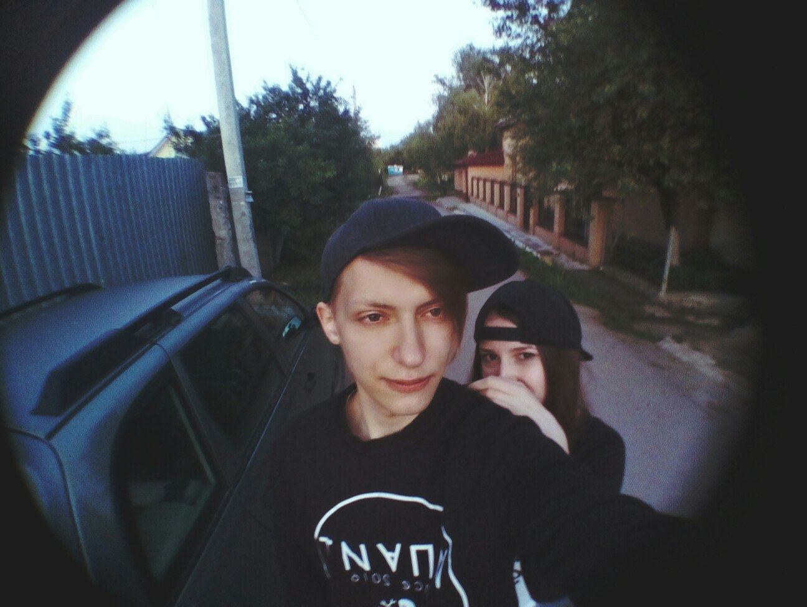

Сайт имени нас с тобой

Как мы с тобой познакомились
ИПАИТ. День Рождения Влады. Влада позвала свою хорошую "подругу" , а подруга позвала тебя, которую никто там не знал, да и ты тоже. Зачем позвала - непонятно. Зачем ты пришла - еще больше непонятно.
Ну и что в итоге, лично мы с тобой в итоге практически не пересекались и не разговаривали. Я даже не расчитывал, что мы будем общаться, уж тем более дружить, ну и УЖ ТЕМ БОЛЕЕ ВСТРЕЧАТЬСЯ И ШУТИТЬ ШУТКИ ВМЕСТЕ(а это, между прочим, очень личный и интимный момент - шутить).
И, тем не менее, нашему знакомству мы должны быть благодарны огромной череде случайностей. Например, что ты там оказалась, или что я там оказался, потому что ни я, ни ты этого не планировали.
Как начали общаться
Познакомиться то мы познакомились, а общаться начали не сразу. Далеко не сразу. Первое сообщение от тебя пришло 23го февраля, это было поздравление. А следующее пришло через три недели, после дня рождения Цветочка и Лариной. Вероятно, после того, как я все утро орал с паблика "всратые животные", а ты лежала рядом, и тебе пришлось все это наблюдать. Впечатлившись контентом, ты прислала мне кек со всратым животным. Я тогда знааааатно удивился, чо она отменя хочет?)))
Мем за мемом, кек за кеком, вот мы и начали переодически списываться. Нечасто, немного и исключительно по делу(поржать). Не гуляли, не созванивались, почти не виделись, за исключением общих посиделок.
Переломный момент
Ну общались иногда, ну кекали, а что дальше? Вроде, ничего. За тобой ухаживали мальчики, тебе было плевать на меня. За мной ухаживали девочки(кек, да?), мне было плевать на тебя. Ну, как партнеров мы друг друга не рассматривали, а если и рассматривали, то в самую-самую последнюю очередь, и, между прочим, это было абсолютно взаимно.
Но непонятно что случилось, когда мы, как всегда, собрались покушать шашлыков дома у Цветочка. Тебе, видите ли, стало жалко меня что я пью водку один(я не знал, что я пью один, мне было круто). Ужаленные в одно место, нам приспичело пойти гулять. Даже два раза, ночью и рано-рано утром. Вот с этого момента мы друг от друга не отходили, громко смеялись и прочее.
В тот день, как я считаю, что-то у рнас друг к другу и засело. Общаться мы стали чаще и, даже, как-то теплее. Наверное, один из лучших дней в моей жизни
Как мы начали встречаться
Летом. Часа 2 дня. Просыпаюсь от вибрации телефона. Ты неистово добивалась моего внимания в директе инстаграма и ВК. У тебя было какое-то невероятное предложение, от которого нельзя было отказываться по той причине, что ты никому еще не предлагала такого. Гулять. Всю ночь. Вчетвером: Я, ты, мой одногруппник и Ира(отчасти, обоим мы обязаны за то, что мы вместе).
Ну, честно говоря, не очень по мне была эта затея. Но, предварительно немного поломавшись ввиду отсутсвия денег и прочего, я согласился. И позвал с собой Гайку.(О даааааа, жар твоего пукана согревал всех. Кроме меня, я так и не заметил). В итоге мы немного выпили, и потом приехала Гайка. Именно послее ее прихода мне стало плохо, затем хорошо и мы ушли с ней в неизвестном направлении на прогулку. В этот момент одному Богу известно было, что у тебя творилось на душе и в голове. Богу, Андрею, Ире и Гайке, которая как раз мне и дала понять о том, что "на друзей так не смотрят". Ну, и Даше, которой ты пыталась об этом поведать. И только я ничего не понял, не заметил, потому что я был угашен, и мне было хорошо.
Сердитая Ангелина злится, игнорирует, планирует ссору из-за того, что не ее парень ушел гулять с другой девочкой. Но Ангелина добрая и быстро успокоилась. Посидели, обнялись и забыли, а кто-то даже и не подозревал ни о чем.
Следующая встреча состоялась 26го июня (очень-очень важная дата, на самом деле) при похожих обстоятельствах. Но уже без Гайки и Иры(слава Богу, Аллаху, и всем остальным непричастным к этому). Собрались, посидели, выпили, поели. Я мало что помню ближе к утру. Но помню, что ходили мы уже за руку, вместе поехали на ливенскую. Я зашел домой переодеться, а ты к подруге. Затем я ждал тебя во дворе на лавке, чтобы вместе поехать в университет на выставку, там я и уснул. Я тогда не сразу понял, что у меня есть девушка. Догадывался, но не осознавал до конца
Ужаринский
Как настоящая пара мы встретились уже 11го июля. Мы собирались с нашими друзьями пожарить что-то съедобное на костре в лесу, а перед этим вкусненько выпить с Трапом. Ну и взять что-то покрече с тобой. Ближе к ночи, когда стемнело, мое любопытство заставило тебя попытаться перебороть свой страх и отправиться за мной в темнююющий лес. Несколько разЖ ночью, ночью и ближе к утру, когда мы уже вышли практически с другой стороны. Это было очень мило, что ты пошла неизвестно куда за мной. Разошлись мы уже рано-рано утром, уже испортилась погода и капал дождь. Мы с тобой собрались ехать в университет, чтоб я сдал практику, и пошли на остановку. Помню, мне было еще немного непривычно быть с тобой наедине и понимать, что ты моя девушка, но в том состоянии я жил инстинктами. И тогда я четко осознавал свою ответственность за тебя и пытался согреть тебя любыми способами, а именно обнимать при каждой возможности, чтобы тебе не было так холодно.
Мы приехали в теплый универ, под крышу, на более-менее мягкий диван. Там пять часов, с семи утра до двенадцати дня, в обнимку мы ждали моего преподавателя, затем я проводил тебя на остановку и попращались до следующей нашей встречи, каждую из которых мы очень-очень ждали
Вписка Медведевой на АлРоса
Лето шло к концу, виделись мы мало, потому что кто-то живет в разных городах. После того как мы попрощались с тобой, посетив стены университета, мы увиделись спустя пару недель в том же лесу, за тем же занятием, но немного с другими людьми. Именно тогда мы с тобой потратили кучу времени и сил, чтобы пройти от Медвелевского леса до Чайки, встретить рассвет, подразнить священнослужителя на заправке, почитать тупые надписи в надземном переходе и даже покушаЦ.
Последний раз за лето мы увиделись лишь на день города, пятого августа. У тебя, кажется, должна была быть практика, а жить было негде, но и ездить с Железногорска каждый день было не рационально. Мы нашли тебе квартиру, благодаря доброте моей подруги Саши. Я собирался тебя поселить, переночевать и уехать домой, чтобы не смущать тебя своим присутствием. Но не смог оставить тебя одну в пустой квартире без малейших признаков каких-либо удобств. И так я провел с тобой почти три дня, три замечательных дня, даже не смотря на то, что у нас банальтно не было ни одной подушки, одеяла, тарелки, кружки и чего-либо повседневного. Но я был счастлив быть рядом с тобой. И ты тоже, я знаю
Остальное сама знаешь
Наверное, это все самое основное, что я хотел тебе напомнить. Все последующие дни, недели, месяцы лишь подтверждали, что ты - моя самая удачная находка, а эти полгода в моей жизни - самые теплые и счастливые. Полгода? Нет, я уверен, что и дальше будет так. Ну а тем более учитывая то, что пролетело это время мгновенно, но не мимо. Спасибо тебе за то, что ты у меня есть. Так внезапно появилась в моей жизни и так намертво привязала к себе.
Я очень надеюсь, что ты осилишь прочитать это все, что это вызовет у тебя теплые эмоции и воспоминания. Я тебя люблю